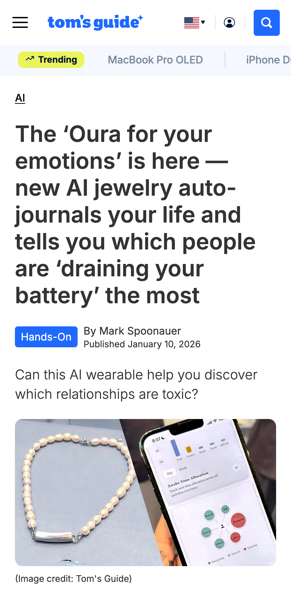
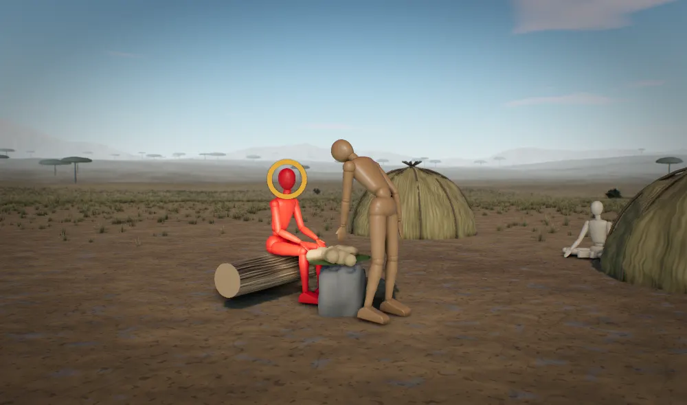

From the article

“Each person is given a score denoted by color: Energizing, Neutral or Draining.”
“I asked Lyu what happens when people fake being energetic with particular people, such as clients or one’s boss, and she said that over time the AI is smart enough to determine your real sentiment.”
“But the real selling point is what Nirva describes as the ‘world’s first emotion tracker.’”
“Nirva will be available for pre-order in February, with the AI jewelry module itself costing $200. ... And the app itself will cost $12 to $14 month.”
Read the article on Tom's Guide, 10 Jan 2026
The evolutionary angle: Nirva's emotion necklace
You don't need a device to tell you how you feel about someone, because the feeling is already the measurement. And that feeling always means the same thing: whether giving and getting between you and that person are in balance. Nirva tells you the part you already know and leaves out the only part you can act on.
Source: The ‘Oura for your emotions’ is here - new AI jewelry auto-journals your life and tells you which people are ‘draining your battery’ the most, Tom's Guide, 10 Jan 2026
The mismatch
Nobody faking enthusiasm for a boss needs a necklace to find out they're faking. Tom's Guide asked what happens when you put on energy for clients or your boss, and the CEO said the AI works out your real sentiment over time. You already know your real sentiment. The deal on offer is $200 plus $12 to $14 a month to hear what your own gut reports for nothing, and to skip the harder part, which is doing something about it.
The drain starts with the job. For most of human history you lived with people you picked, ties ran both ways, and anyone who only took got mocked, shunned or left behind when you walked to another camp. There were no bosses. A job hands you a boss and clients you didn't pick, can't push back on and can't leave without losing your pay. So the feeling reports that giving and getting are out of balance, and nothing in your day lets you act on it.
Nirva takes that reading and turns it into a colour on the other person. Draining sounds like a fixed trait, so the only advice left is to avoid them, and you can't avoid your boss. The feeling keeps firing, the score repeats every day, and the bill comes every month. The press release offers affirmations and tips, and even the reviewer admits nobody has checked the scores against what people actually feel.
 Today
Today
What the brain seesWhat her gut sees: a campmate who takes more than he gives.
The claims
- 1
Nirva sells a colour score for a feeling your gut already gives you for free.
Cor says Humans are built to keep score of who gives back and who only takes, because for most of history nobody fed themselves alone.
- tested many timesE707 Gurven 2004
- argued, not yet testedE239 Tomasello 2014 E375 Boehm 1999
- 2
Feeling drained by someone means the giving and getting between you are out of balance.
Cor says For most of human history ties between campmates ran both ways, and anyone who took without giving was mocked or shut out.
- tested many timesE373 Boehm 1999
- tested onceE598 Apicella et al. 2012
- argued, not yet testedE375 Boehm 1999
- 3
A job hands you a boss you can't leave, so the drained feeling has nowhere to go.
Cor says For most of human history people could walk to another camp at any time, and that freedom checked anyone who took too much.
- tested many timesE688 Boehm 1993
- argued, not yet testedE677 Woodburn 1982
- contestedEEA-SOC-10 Leadership and dominance (no rulers; prestige by consent; exit available)
- 4
Calling your boss Draining makes a lopsided deal sound like a personality.
GAP: no Cor record yet
How strongtested many timestested onceseen in animalsargued, not yet testedcontested